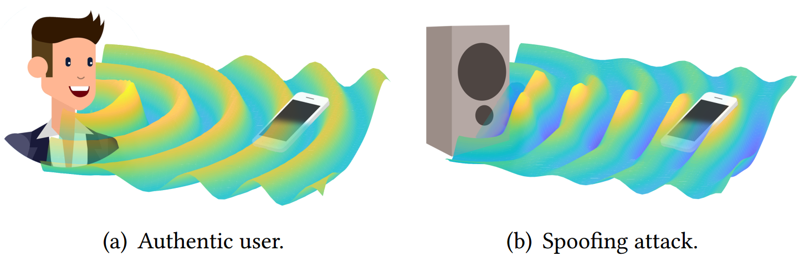
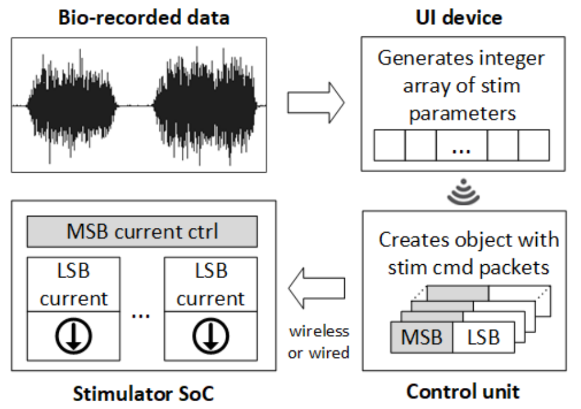
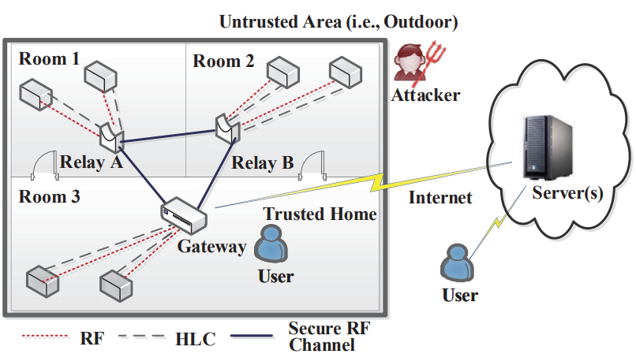

|
|||||||||||
| I'm currently a PhD student and graduate student research assistant at the University of Michgan EECS Department, advised by Professor Kevin Fu. My research interests include Embedded System and Sensor Security, Acoustic Biometrics, Internet of Things, and Neurostimulation (Neural Engineering). |
News
Projects
CaField: The Catcher in the Field
In this project, we discovered a new acoustic biometric "Fieldprint", which is embedded in the sound fields of vibrating objects, and proposed a Fieldprint based spoofing detection for text-independent speaker verification. Check our CCS paper on the catcher in the field here.

The Box: A Compact Veratile Neurostimulation System
In this project, we designed a portable 32-channel neural stimulator system based on an implantable System-On-Chip (SoC), which supports versatile and highly programmable stimulation patterns. Check our NER paper on the stimulation box here.

HlcAuth: Home-limited Channel for Home IoT
In this project, we explored the characteristics of different communication mediums as a home-limited channel and designed a key-free communication mechanism for IoT devices in a smart home. Check the Paper here.

Experience
Graduate Research Assistant
University of Michigan, Ann Arbor Sep.2019 - Present
At the EECS Department of Michigan, I work with excellent people in SPQR. My research focuses on attacking the physical layer of computer and embedded systems through acoustic and optical mediums, and developing corresponding defense mechanisms.
Undergraduate Research Assistant
Zhejiang University, China Sep.2017 - Jul.2019
I worked as an undergraduate research assistant in Ubiquitous System Security Lab of Zhejiang University, under the supervision of Professor Wenyuan Xu and Professor Xiaoyu Ji. My works here include voice verification attack defenses and home IoT security.
.Research Intern
University of California, Los AngelesJun.2018 - Sep.2018
I worked as an undergraduate researcher in Biomimetic Reseach Lab of UCLA, advised by Professor Wentai Liu. I focused on implantable neural stimulation systems and the concept of dynamic stimulation here.
Publications
Miscellaneous
I am interested in almost all forms of art. Both of my parents have PhD degree in related areas, which is funny because I have an engineering major. I am particularly enthusiastic about music, photography, and Chinese traditional calligraphy. As for music, I try to appreciate all kinds of them, yet I still have a preference: Electronic (especially Trap), Rock (Chinese 80's and 90's), Saxophone, Rap, and Classical. I love music that can ingeniously mix traditional Chinses elements into it.
Outside academics, I enjoy many kinds of sports. I have been playing basketball since I was 10, and I also play soccer, volleyball, ping-pong, and badminton. For the last 2 years, I work out in the gym 4-5 times a week.
I like solving problems from a physics standpoint, and that is one of the main reasons that I join SPQR, where we explore different physical channels to launch attacks.